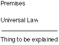
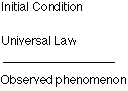
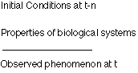
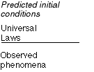

A evolução é por vezes criticada por não ser uma ciência preditiva e por não possuir leis naturais. Isto relaciona-se com a questão de se a ciência deveria ser como a física (ver a secção sobre a natureza da ciência), mas as duas questões levantam uma questão mais geral.
Isso leva à questão se as explicações precisam utilizar leis naturais, e o que são explicações, de qualquer forma?
Uma teoria sobre explicação é chamada de teoria dedutiva nomológica (ND), ou, menos pretensiosamente, a teoria dedutiva hipotética. Devido aos filósofos Karl Popper e GC Hempel [cf Dray 1966, especialmente o ensaio de A Donagan], ela tem a forma:

A ideia é que, se a coisa a ser explicada for uma consequência lógica e dedutiva das premissas e das leis universais, então você a explicou. Uma vez que você tenha uma teoria dessa forma, então pode prever que um fenômeno ocorrerá se as condições iniciais forem adequadas, com base nas leis universais da física, da química, etc:

Existe uma versão que utiliza pressupostos estatísticos e permite argumento indutivo em vez de restringir a explicação ao argumento dedutivo, chamada de modelo indutivo estatístico (SI), mas podemos seguramente ignorá-la aqui.
A previsão é uma consequência dedutiva de uma teoria verdadeira e de medições adequadas. Como a evolução não pode fazer previsões desse tipo e, de fato, qualquer resultado é compatível com a teoria, seus críticos afirmam que a evolução não é uma ciência completa (veja a seção sobre a tautologia da aptidão).
No entanto, existem problemas com essa visão altamente idealizada da explicação científica, e de qualquer forma, argumentarei que isso não afeta a evolução.
Qualquer conjunto de leis são simplificações ideais. Para prever onde um planeta estará em 10.000 anos, você tem que ignorar muitas coisas, como os corpos muito pequenos, a influência de estrelas e galáxias distantes, o atrito devido ao vento solar, e assim por diante. E funciona, até certo ponto. Mas esse grau ainda é real. Você pode estar errado apenas alguns metros, mas estará errado, devido a essas complicações ignoradas. Sistemas físicos desse tipo são estáveis, no sentido de que as condições iniciais não afetam muito o resultado.
A evolução não é como esses sistemas. É altamente sensível às condições iniciais e às condições de contorno que surgem durante o curso da evolução. Não é possível prever com qualquer grau razoável de precisão quais mutações surgirão, quais genótipos se recombinarão e quais outros eventos perturbarão a maneira como as espécies se desenvolvem ao longo do tempo. Além disso, as chamadas 'leis' da genética e outras regras biológicas não são leis. São exceções. Literalmente. Para cada lei, até mesmo para a chamada 'dogma central' da genética molecular, há pelo menos uma exceção.
E, contudo, sabemos as propriedades de muitos processos e sistemas biológicos o suficiente para prever o que farão na ausência de qualquer outra influência. Isso é provado no laboratório diariamente. Assim, na biologia, temos o extremo do continuum do que temos em física no outro extremo. A diferença é de grau, não de espécie. E cada vez mais, físicos estão descobrindo sistemas que são igualmente instáveis e sensíveis. Não se pode prever em física o que um pequeno número de moléculas fará em uma chama, ou em um grande volume de gás, por exemplo. E embora o tempo não possa ser previsto em detalhes muito finos por muito tempo, você pode explicar o tempo da semana passada através das condições iniciais e das leis da termodinâmica, etc, depois que ele tenha ocorrido.
Se você adota a forma padrão de explicação biológica, ela tem a mesma estrutura de uma explicação física. Apenas diferem em dois aspectos. Primeiro, não é possível isolar 'influências' extrínsecas com antecedência para populações selvagens. Segundo, não é possível fazer uma previsão muito além do curto prazo imediato (portanto, ninguém pode prever o futuro da evolução de uma espécie). Embora tenham sido realizados diversos experimentos para testar hipóteses selecionistas por meio de previsões, como os estudos sobre tentilhões nas Ilhas Galápagos realizados pelos Grants, na maioria das vezes, as explicações em evolução seguem o formato a seguir:

Em outras palavras, são retrodições, não previsões. A única diferença formal entre isso e a mesma forma na física é que o tempo verbal é diferente. Este uso do modelo nomológico-dedutivo em casos históricos é chamado de modelo de lei abrangente [Dray 1957, 1966].
Portanto, a física não é realmente uma ciência diferente da biologia evolutiva, exceto em algumas questões de conveniência relacionadas à experimentação e ao grau de estabilidade dos sistemas que às vezes explica, e nem sempre então.
As explicações por leis podem ser usadas para retrodizer as condições iniciais, em certas circunstâncias. Se você sabe o que está atualmente em evidência e possui leis que geram esses resultados, às vezes pode prever o que será encontrado:

Por exemplo - você sabe que certas características de formigas são derivadas (não no ancestral primitivo). Você tem leis gerais de evolução que explicam os fenômenos que observa (formigas atuais, e no registro fóssil). Então, você prevê que uma certa forma transicional será encontrada. Quando for, você fez uma previsão legítima.
Que condições especiais podem ser necessárias para isso? Bem, para começar, se você tem um argumento dedutivo do tipo "se A, então B", você não pode inferir imediatamente, a partir da existência ou verdade de B, que A. Poderia ter sido outra coisa. B pode ter uma virtualidade de infinitas causas possíveis. Antes de você poder fazer uma retrodição como essa, você tem que restringir o campo. Ou seja, você tem que assumir a validade de alguns modelos teóricos antes de poder fazer a retrodição/predição. Por outro lado, se você fizer tal afirmação e ela se confirmar, você certamente terá fortalecido seu modelo.
Finalmente, note que o modelo ND não é sofisticado o suficiente para capturar tudo o que é importante sobre explicações científicas. Muitas explicações científicas baseiam-se não em leis, mas em propensões, isto é, probabilidade de se comportar de uma certa maneira. E muitas explicações científicas aceitas e perfeitamente úteis não são dedutivas, são indutivas. Ou seja, o resultado provável das condições iniciais e das leis não é uma dedução rigorosa, mas uma indução com todos os problemas que isso traz. Ainda assim, é isso que a ciência faz, independentemente de os filósofos gostarem ou não (cf Franklin 1997).